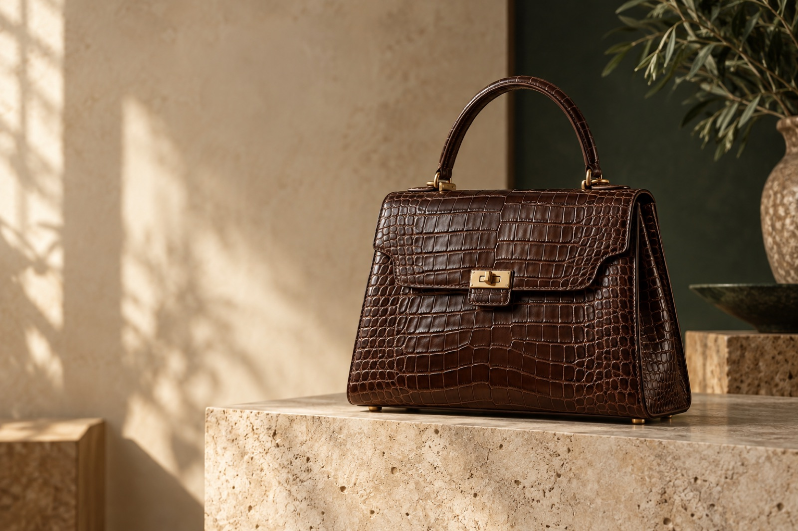
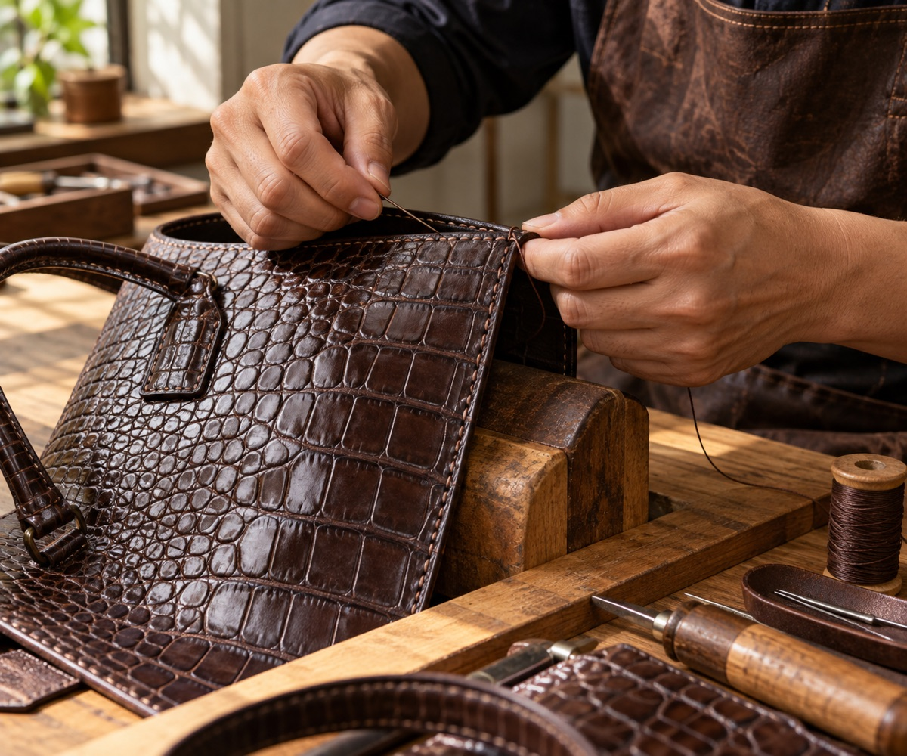

Túi xách
Phom dáng cho mọi nhịp sống
Thành lập năm 1988, Việt Thành kết hợp kinh nghiệm thuộc da với thiết kế tinh giản để tạo nên túi, ví và phụ kiện tôn vinh vân da tự nhiên.
Khám phá bộ sưu tập
Dấu vân riêng · Chế tác có chủ đíchTừ kỹ thuật thuộc da đến hoàn thiện sản phẩm, Việt Thành gìn giữ câu chuyện thủ công Việt qua những thiết kế để chất liệu lên tiếng.

Chúng tôi tin vào vẻ đẹp của điều được làm chậm. Từ lựa chọn chất liệu đến đường khâu cuối cùng, mỗi công đoạn đều dành chỗ cho sự tỉ mỉ và dấu ấn riêng của người thợ.
Tìm hiểu câu chuyệnTìm hiểu những đặc điểm tự nhiên của vân da và bề mặt chất liệu.
Đọc bài viết ↗
Một vài dấu hiệu giúp phân biệt kết cấu và cảm nhận của từng loại da.
Đọc bài viết ↗Một thiết kế đề cao tỷ lệ, bề mặt chất liệu và vẻ đẹp điềm tĩnh.
Đọc bài viết ↗Đội ngũ Việt Thành sẵn sàng tư vấn về bộ sưu tập và trải nghiệm sản phẩm tại cửa hàng.
Liên hệ tư vấnVân da tự nhiên
Tôn trọng cá tính riêng của từng bề mặt da.
Hoàn thiện thủ công
Chú tâm đến tỉ lệ, đường nét và cảm giác khi sử dụng.
Chăm sóc dài lâu
Tư vấn lựa chọn và gìn giữ sản phẩm theo thời gian.